This chapter describes the integration procedure for creating a JDBC data source for ALTIBASE to integrated using the domain management console and then running a simple web application using the JDBC data source.
Creating JDBC Data Source
This is the procedure for creating a JDBC data source for ALTIBASE and setting up the connection pool of the JDBC data source.
For reference, in the lower version, the connection pool was created first, and then the JDBC data source to use the connection pool was created. However, in the higher version, when the JDBC data source is created, the connection pool is automatically created.
Basically, the JDBC driver setting for the JDBC data source to be created must be preceded by referring to HOW to Set the JDBC Driver to be used in WebLogic.
Creating JDBC Data Source
Create a JDBC data source "altibase" for ALTIBASE 5 installed locally.
1.Connect to the management console provided by the domain management server.
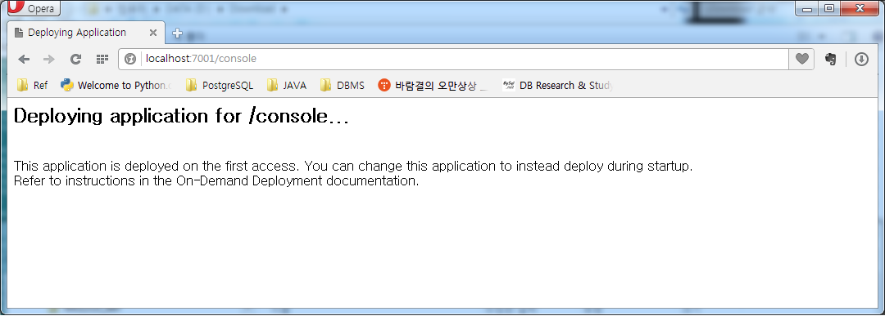
2. Log in by entering the user name and password of the management server.
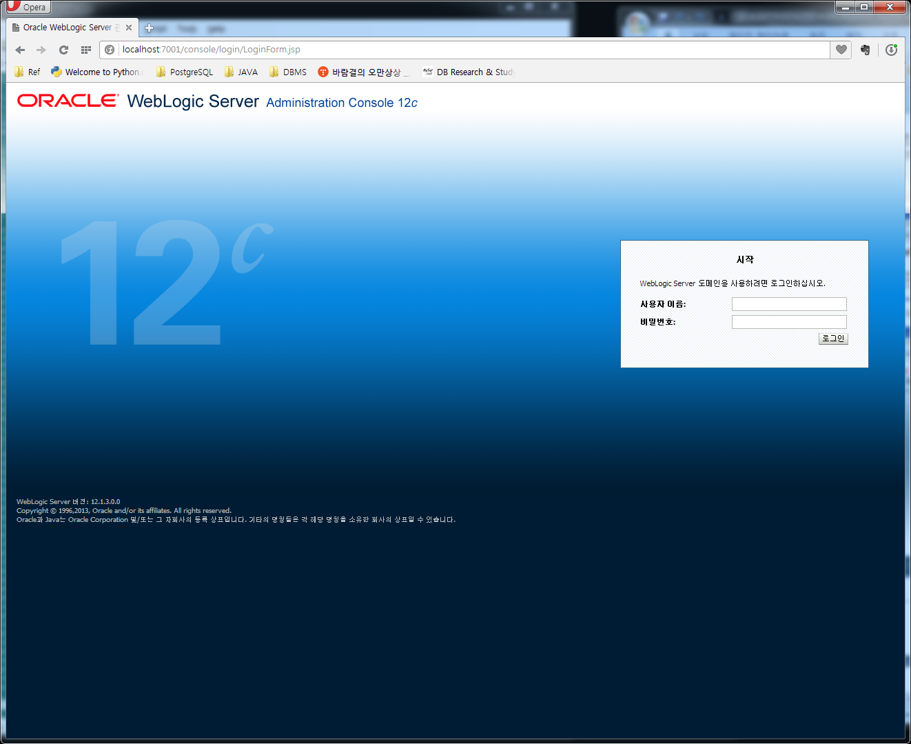
3. Select the "Data Source" item on the main page of the management console.
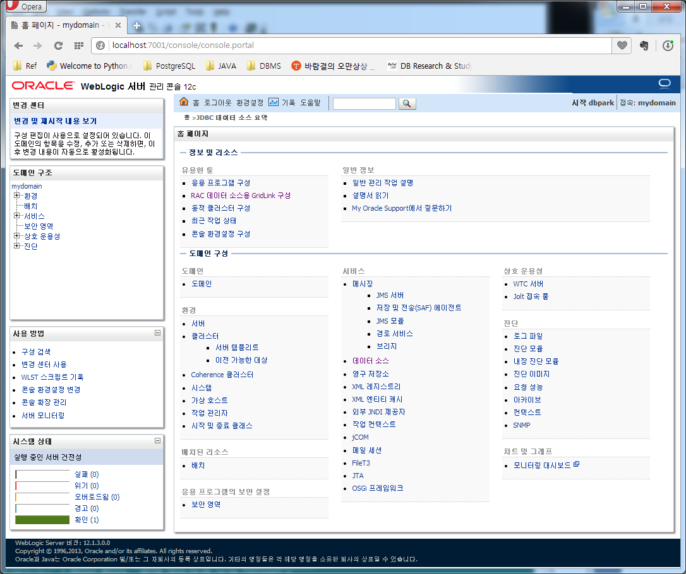
4. Select a general data source from [DOCKI: New].
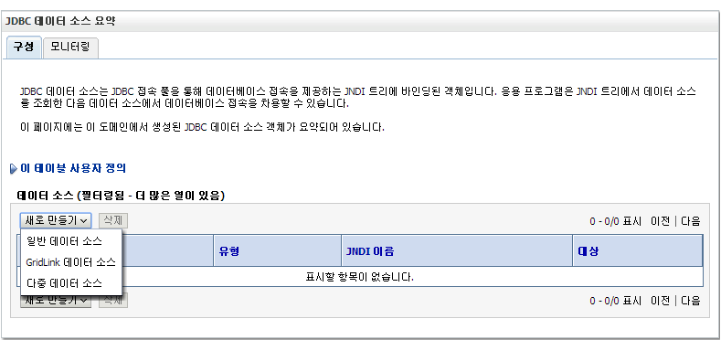
5. After entering the JDBC data source properties, go to the next step.
- JDBC data source, JNDI name should be the same in general.
- Select the data type [DOCKI: Other].
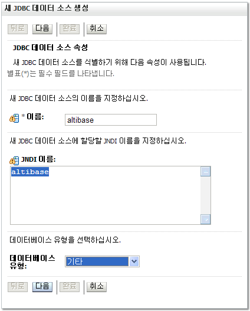
6. Check database type (other)
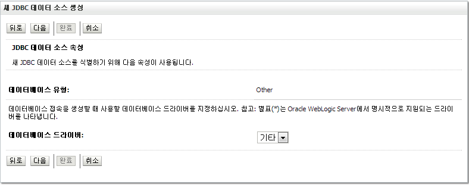
7. Skip the subsequent “JDBC data source attribute” step and go to the next step.
8. Set the "Transaction Options". If there is nothing special to set, go to the next step.
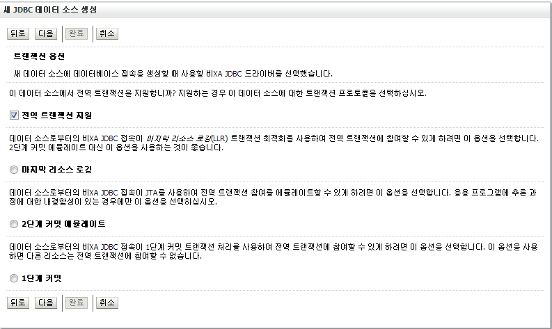
9. Enter ALTIBASE information to be linked. (sys / manager)
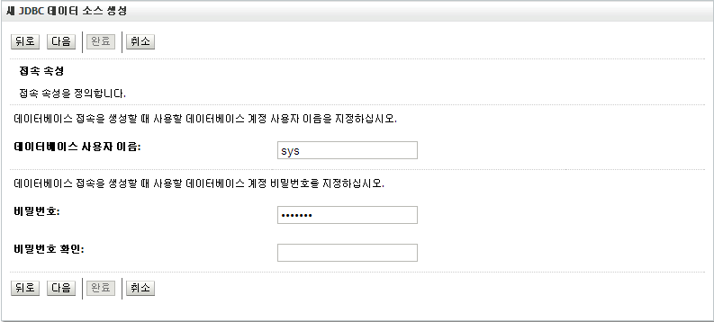
10. Enter the JDBC information related to the connection pool for ALTIBASE connection.
Driver class name
When using Altibase.jar, Altibase.jdbc.driver.AltibaseDriver
When using Altibase # .jar, Altibase # .jdbc.driver.AltibaseDriver
- URL
Enter the connection URL based on the information of ALTIBASE entered in the previous step.
jdbc: Altibase: //127.0.0.1: 20300 / mydb Property
In the case of ALTIBASE 4, the user to access in “user = sys” format must be entered.
In the case of ALTIBASE 5 and ALTIBASE 6, it can be omitted.
- Test Table
Generally, a dummy table, dual, is specified.
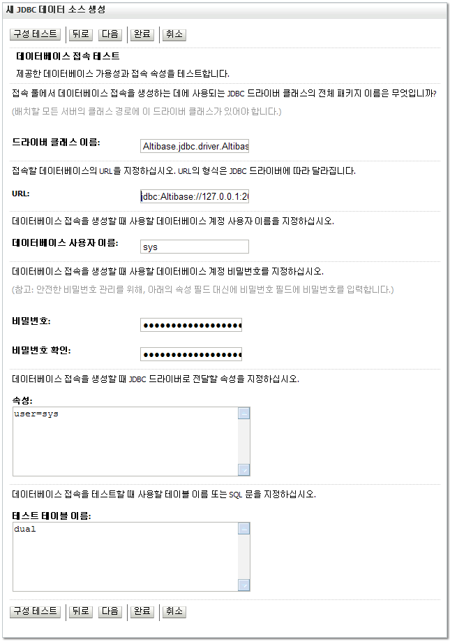
11. Click [DOCKI: Configuration Test] to proceed to the next step if the connection test is successful. If the test fails, refer to the linkage error section first.
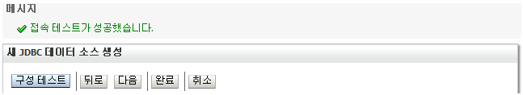
12. Select the management server as the server on which to deploy the JDBC data source, and then select [DOCKI: Done].
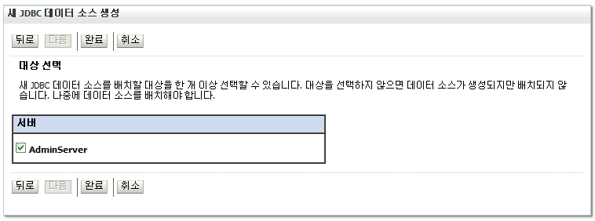
13. Confirm that the JDBC data source has been successfully added.
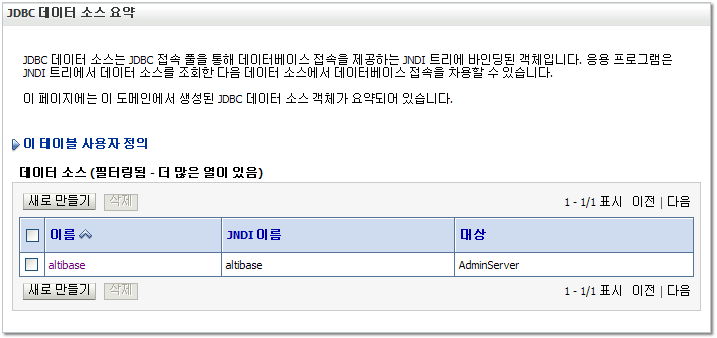
Change Connection Pool Settings
When the user creates a JDBC data source, related connection pools are also created. The connection pool has various properties. If necessary, refer to the following procedure to change the settings.
Changing the attributes presented as examples is not mandatory, but is recommended.
1. On the management console main screen, select the “Data Sources” item, select the JDBC data source you want to change, and then select the [DOCKI: Connection Pool] tab of the [DOCKI: Configuration] tab.
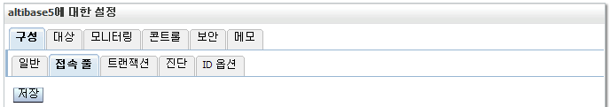
2. Change the following properties as appropriate and select [DOCKI: Save].
- Initial Capacity
The default number of connection pools is 1, but a larger number is recommended considering the workload.
Check
Check whether the JDBC data source creating was successful.
- Check in WebLogic
Select the "Data Source" item on the main screen of management console, click the JDBC data source the user wants to check, and check the connection success on the [DOCKI: Testing] tab of the [DOCKI: Monitoring] tab.
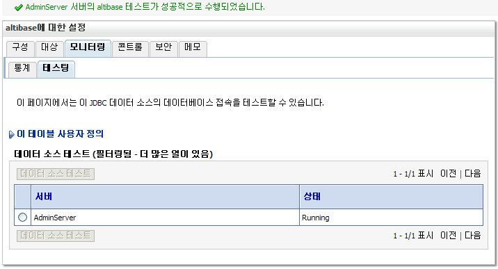
- Check in ALTIBASE
Perform a session-related query in ALTIBASE, which is the connection target of the JDBC data source, and check whether the session exists as much as the initial capacity of the established connection pool.
Below is the execution result when the initial capacity is set to 10. The user can see that there are 10 JDBC type sessions.
Creating and Deploying Web Application
This is an example of creating and deploying a simple web application for integration.
Creating Web Application
Create a web application named sample and the default page welcome.html.
1.After creating a directory with the name of the web application, create "WEB-INF" as a sub-directory.
2. Create a web.xml file with the following contents in the WEB-INF directory.
<?xml version="1.0" encoding="UTF-8"?>
<!DOCTYPE web-app PUBLIC "-//Sun Microsystems, Inc.//DTD Web Application 2.3//EN" "http://java.sun.com/dtd/web-app_2_3.dtd">
<web-app>
<welcome-file-list>
<welcome-file>welcome.html</welcome-file>
</welcome-file-list>
</web-app>
Arrangement
The user can manually deploy through the deployment menu provided in the management console, but for convenience, use automatic deployment through $DOMAIN_HOME/autodeploy provided when installed in development mode.
1.Place the entire web application directory created under $DOMAIN_HOME/autodeploy.
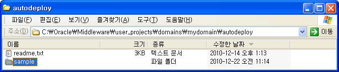
Check
The example of the basic page of the web application confirms the success of the deployment.
1.Create welcome.html in the sample directory with the following content.
<head><title>Welcome Page</title></head> <body>welcome!!</body> </html>
2. Access the created page and check the output.
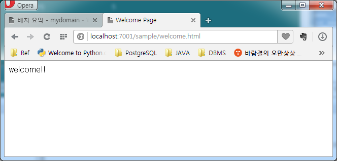
Integration Example
By executing the example of connecting to ALTIBASE through JNDI of the JDBC data source, it is checked whether the connection with ALTIBASE was successful.
ALTIBASE Integration
Create a web application program that works with ALTIBASE to check the connection information.
1.Create singleVersion.jsp in the sample directory with the following contents.
<%@ page contentType="text/html;charset=euc-kr" pageEncoding="euc-kr"%>
<%@ page import="java.sql.*, javax.naming.*, javax.sql.*"%>
<head><title>Single Version Test Page</title></head>
<body>
<%
Context initCtx = new InitialContext();
DataSource ds = (DataSource)initCtx.lookup("altibase");
Connection sCon = ds.getConnection();
Statement sStmt = sCon.createStatement();
String query = "select '" +
"<b>DB name: </b>'||trim(db_name)||'<br>" +
"<b>version: </b>'||trim(product_signature)||'<br>" +
"<b>Current Time: </b>'"+
"||to_char(sysdate,'yyyy/mm/dd hh24:mi:ss')||'<hr>'" +
" from v$database;";
ResultSet sRes = sStmt.executeQuery(query);
sRes.next();
out.println("<font size=4><b>ALTIBASE Connection Info</b></font><p>");
out.println(sRes.getString(1));
sRes.close();
sStmt.close();
sCon.close();
%>
</body>
</html>
2. Access to the created page and check whether the information of the integrating target Altibase is displayed with error.
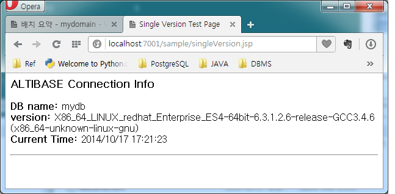
Integrating Different Versions of ALTIBASE
Create a web application program that works with ALTIBASE and ALTIBASE 5 at the same time to check the connection information.
1.Refer too How to set the JDBC Driver to be used in WebLogic and set the JDBC driver files for ALTIBASE 5, and ALTIBASE 6 in advance to be used in WebLogic.
(ALTIBASE JDBC provides a JDBC driver with a different name in the package for that version. It is prepared for easy use by copying from a higher version or lower version. In other words, to use HDB 5 and 6 versions simultaneously, the user can get the name changed version and use it.
*The two drivers provided in the HDB package are the same driver with different names.
HDB Version | ALTIBASE 5 | ALTIBASE 6 | ALTIBASE 7 |
Current Package Version | Altibase.jar | Altibase.jar | Altibase.jar |
For Compatibility Name Change Version | Altibase5.jar | Altibase6.jar | Altibase7.jar |
)
2. Create a JDBC data source for each. (JNDI makes it the same as the JDBC data source name.)
- JDBC data source altibase for ALTIBASE using Altibase.jar
(Driver class name: Altibase.jdbc.driver.AltibaseDriver) - JDBC data source altibase5 for ALTIBASE 5 using Altibase5.jar
(Driver class name: Altibase.jdbc.driver.AltibaseDriver)

3. In the sample directory, create multiVersion.jsp with the following content.
<%@ page contentType="text/html;charset=euc-kr" pageEncoding="euc-kr"%>
<%@ page import="java.sql.*, javax.naming.*, javax.sql.*"%>
<head><title>Multi Version Test Page</title></head>
<body>
<%
Context initCtx = new InitialContext();
DataSource ds1 = (DataSource)initCtx.lookup("altibase5");
DataSource ds2 = (DataSource)initCtx.lookup("altibase6");
Connection sCon1 = ds1.getConnection();
Connection sCon2 = ds2.getConnection();
Statement sStmt1 = sCon1.createStatement();
Statement sStmt2 = sCon2.createStatement();
String query = "select '" +
"<b>DB name: </b>'||trim(db_name)||'<br>" +
"<b>version: </b>'||trim(product_signature)||'<br>" +
"<b>Current Time: </b>'"+
"||to_char(sysdate,'yyyy/mm/dd hh24:mi:ss')||'<hr>'" +
" from v$database;";
ResultSet sRes1 = sStmt1.executeQuery(query);
ResultSet sRes2 = sStmt2.executeQuery(query);
sRes1.next();
sRes2.next();
out.println("<font size=4><b>First ALTIBASE Connection Info.");
out.println("</font></b><p>"+sRes1.getString(1));
out.println("<font size=4><b>Second ALTIBASE Connection Info.");
out.println("</font></b><p>"+sRes2.getString(1));
sRes1.close();
sRes2.close();
sStmt1.close();
sStmt2.close();
sCon1.close();
sCon2.close();
%>
</body>
</html>
4. Access to the created page and check whether the information of the integrating target Altibase is displayed without error.
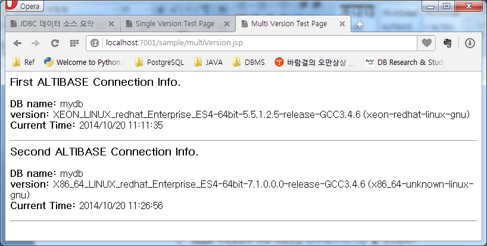
{kind=link}
{kind=link}
{kind=link}
{kind=link}
{kind=link}
{kind=link}
{kind=link}
{kind=link}
{kind=link}
{kind=link}
{kind=link}
{kind=link}
{kind=link}
{kind=link}
{kind=link}
{kind=link}
{kind=link}
{kind=link}
{kind=link}